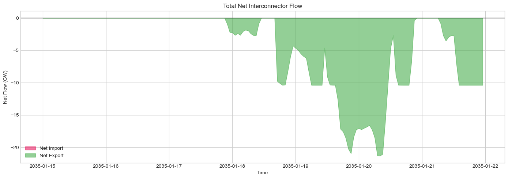
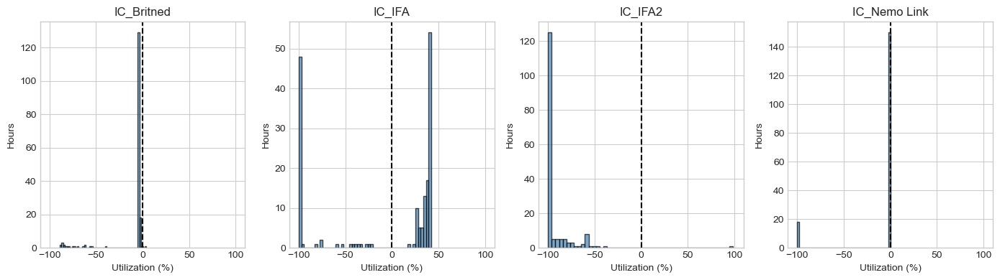

Interconnectors#
This tutorial covers GB interconnectors to neighboring countries - analyzing cross-border electricity flows and their role in system balancing.
What You’ll Learn#
Interconnector capacity and connections
Import/export flow patterns
Price-driven flows
Interconnector utilization
Value of interconnection
1. Setup#
[1]:
import pypsa
import pandas as pd
import numpy as np
import matplotlib.pyplot as plt
import warnings
import folium
from pyproj import Transformer
warnings.filterwarnings('ignore')
plt.style.use('seaborn-v0_8-whitegrid')
plt.rcParams['figure.figsize'] = [12, 6]
plt.rcParams['figure.dpi'] = 100
colors = {
'France': '#0055A4', 'Belgium': '#FFCD00', 'Netherlands': '#FF6600',
'Norway': '#BA0C2F', 'Ireland': '#169B62', 'Denmark': '#C8102E',
'import': '#E91E63', 'export': '#4CAF50'
}
print(f"PyPSA version: {pypsa.__version__}")
PyPSA version: 1.0.7
2. Load Network#
[2]:
# Load a network with interconnectors
n = pypsa.Network("../../../resources/network/HT35_clustered_solved.nc")
print(f"Network loaded")
print(f" Snapshots: {len(n.snapshots)}")
print(f" Links: {len(n.links)}")
INFO:pypsa.network.io:Imported network 'HT35_clustered (Clustered)' has buses, carriers, generators, lines, links, loads, storage_units, stores, sub_networks
Network loaded
Snapshots: 168
Links: 282
3. Interconnector Overview#
GB is connected to continental Europe and Ireland via HVDC links.
[3]:
# Identify interconnectors (links connecting to external markets)
# Look for links with specific carrier types or naming patterns
links = n.links.copy()
print(f"Total links: {len(links)}")
print(f"\nLink carriers:")
print(links['carrier'].value_counts())
Total links: 282
Link carriers:
carrier
H2_turbine 242
electrolysis 24
DC 13
AC 3
Name: count, dtype: int64
[4]:
# Filter interconnectors (adjust based on your network's naming convention)
interconnector_keywords = ['IFA', 'BritNed', 'NEMO', 'NSL', 'Moyle', 'EWIC', 'VikingLink', 'interconnector', 'IC']
# Try to identify interconnectors by name or carrier
mask = links.index.str.contains('|'.join(interconnector_keywords), case=False, na=False)
if not mask.any():
# Try carrier
mask = links['carrier'].str.contains('interconnector|HVDC|DC', case=False, na=False)
if mask.any():
interconnectors = links[mask]
print(f"Found {len(interconnectors)} interconnectors:")
print(interconnectors[['bus0', 'bus1', 'p_nom', 'carrier']].to_string())
else:
print("No interconnectors found - using all links for demonstration")
interconnectors = links.head(5) # Use first 5 links as example
Found 13 interconnectors:
bus0 bus1 p_nom carrier
name
IC_Britned NFLE External_HVDC_External_Netherlands_Maasvlakte 1928.093918 DC
IC_IFA SELL_1 External_HVDC_External_France_Calais 3833.050709 DC
IC_IFA2 BOTW_1 External_HVDC_External_France_Calais 1928.093918 DC
IC_Nemo Link RICH_J|RICH1 External_HVDC_External_Belgium_Zeebrugge 1966.655797 DC
IC_NS Link BLYTB1 External_HVDC_External_Norway_Kvilldal 2699.331485 DC
IC_Moyle LINM External_HVDC_External_Northern_Ireland_Ballycronan_More 915.844611 DC
IC_ElecLink SELL_1 External_HVDC_External_France_Calais 1928.093918 DC
IC_Viking WALP_B External_HVDC_External_Denmark_Revsing 2699.331485 DC
IC_Auchencrosh (interconnector CCT) LINM External_HVDC_External_Northern_Ireland_Ballycronan_More 964.046959 DC
IC_East West Interconnector CONQA1|SASA External_HVDC_External_Ireland_Rush_North_Beach 973.687429 DC
IC_Greenlink PEMB_1 External_HVDC_External_Ireland_Great_Island 971.759335 DC
IC_Isle of Man Interconnector PENW_1|STAH_1|WABO External_HVDC_External_Isle_Of_Man_Douglas 142.678950 DC
IC_NeuConnect Interconnector NFLE External_HVDC_External_Netherlands_Maasvlakte 2699.331485 DC
4. Interconnector Capacity#
[5]:
# Capacity summary
if len(interconnectors) > 0:
total_import_capacity = interconnectors['p_nom'].sum() / 1000 # GW
print(f"Total Import Capacity: {total_import_capacity:.2f} GW")
# Capacity by interconnector
print("\nCapacity by Interconnector (MW):")
for ic in interconnectors.index:
print(f" {ic}: {interconnectors.loc[ic, 'p_nom']:.0f} MW")
Total Import Capacity: 23.65 GW
Capacity by Interconnector (MW):
IC_Britned: 1928 MW
IC_IFA: 3833 MW
IC_IFA2: 1928 MW
IC_Nemo Link: 1967 MW
IC_NS Link: 2699 MW
IC_Moyle: 916 MW
IC_ElecLink: 1928 MW
IC_Viking: 2699 MW
IC_Auchencrosh (interconnector CCT): 964 MW
IC_East West Interconnector: 974 MW
IC_Greenlink: 972 MW
IC_Isle of Man Interconnector: 143 MW
IC_NeuConnect Interconnector: 2699 MW
[6]:
# Capacity bar chart
if len(interconnectors) > 0:
fig, ax = plt.subplots(figsize=(12, 6))
capacity = interconnectors['p_nom'] / 1000 # GW
capacity.plot(kind='barh', ax=ax, color='steelblue', edgecolor='black')
ax.set_xlabel('Capacity (GW)')
ax.set_ylabel('Interconnector')
ax.set_title('Interconnector Import Capacity')
plt.tight_layout()
plt.show()

5. Power Flows#
[7]:
# Get flow data
if len(n.links_t.p0.columns) > 0:
flows = n.links_t.p0
# Filter to interconnectors
ic_flows = flows[[c for c in interconnectors.index if c in flows.columns]]
if len(ic_flows.columns) > 0:
print("Flow Statistics (MW):")
print(" Positive = flow from bus0 to bus1")
print(ic_flows.describe().round(0))
else:
print("No interconnector flow data available")
ic_flows = None
else:
print("No link flow data")
ic_flows = None
Flow Statistics (MW):
Positive = flow from bus0 to bus1
name IC_Britned IC_IFA IC_IFA2 IC_Nemo Link IC_NS Link IC_Moyle \
count 168.0 168.0 168.0 168.0 168.0 168.0
mean -224.0 -354.0 -1781.0 -211.0 -1210.0 -7.0
std 438.0 2407.0 381.0 610.0 1285.0 6.0
min -1714.0 -3833.0 -1928.0 -1967.0 -2699.0 -86.0
25% -79.0 -3833.0 -1928.0 -0.0 -2699.0 -7.0
50% -77.0 1292.0 -1924.0 -0.0 -1.0 -7.0
75% -72.0 1548.0 -1851.0 -0.0 -0.0 -7.0
max 81.0 1622.0 1899.0 -0.0 -0.0 -6.0
name IC_ElecLink IC_Viking IC_Auchencrosh (interconnector CCT) \
count 168.0 168.0 168.0
mean -398.0 -72.0 6.0
std 1012.0 415.0 7.0
min -1928.0 -2691.0 -82.0
25% -1928.0 -0.0 7.0
50% 225.0 -0.0 7.0
75% 321.0 -0.0 7.0
max 970.0 -0.0 9.0
name IC_East West Interconnector IC_Greenlink \
count 168.0 168.0
mean -64.0 -101.0
std 241.0 295.0
min -974.0 -972.0
25% -0.0 -0.0
50% -0.0 -0.0
75% -0.0 -0.0
max -0.0 -0.0
name IC_Isle of Man Interconnector IC_NeuConnect Interconnector
count 168.0 168.0
mean -15.0 -180.0
std 43.0 714.0
min -143.0 -2487.0
25% -0.0 67.0
50% -0.0 74.0
75% -0.0 78.0
max -0.0 82.0
[8]:
# Flow time series
if ic_flows is not None and len(ic_flows.columns) > 0:
fig, ax = plt.subplots(figsize=(14, 6))
for col in ic_flows.columns:
ax.plot(ic_flows.index, ic_flows[col] / 1000, linewidth=1, label=col, alpha=0.8)
ax.axhline(y=0, color='black', linestyle='-', linewidth=0.5)
ax.set_ylabel('Flow (GW)')
ax.set_xlabel('Time')
ax.set_title('Interconnector Flows Over Time')
ax.legend(loc='upper right')
plt.tight_layout()
plt.show()

[9]:
# Total net import/export
if ic_flows is not None and len(ic_flows.columns) > 0:
total_flow = ic_flows.sum(axis=1) / 1000 # GW
fig, ax = plt.subplots(figsize=(14, 5))
ax.fill_between(total_flow.index, total_flow,
where=total_flow >= 0, alpha=0.6, color=colors['import'], label='Net Import')
ax.fill_between(total_flow.index, total_flow,
where=total_flow < 0, alpha=0.6, color=colors['export'], label='Net Export')
ax.axhline(y=0, color='black', linestyle='-', linewidth=1)
ax.set_ylabel('Net Flow (GW)')
ax.set_xlabel('Time')
ax.set_title('Total Net Interconnector Flow')
ax.legend()
plt.tight_layout()
plt.show()
# Statistics
print(f"Net Import Statistics:")
print(f" Total Import: {total_flow[total_flow > 0].sum():.1f} GWh")
print(f" Total Export: {-total_flow[total_flow < 0].sum():.1f} GWh")
print(f" Net: {total_flow.sum():.1f} GWh")

Net Import Statistics:
Total Import: 0.0 GWh
Total Export: 774.7 GWh
Net: -774.7 GWh
6. Interconnector Utilization#
[11]:
# Utilization histogram
if ic_flows is not None and len(ic_flows.columns) > 0:
fig, axes = plt.subplots(1, min(len(ic_flows.columns), 4), figsize=(14, 4))
if len(ic_flows.columns) == 1:
axes = [axes]
for idx, ic in enumerate(ic_flows.columns[:4]):
if ic in interconnectors.index:
ax = axes[idx]
p_nom = interconnectors.loc[ic, 'p_nom']
util = ic_flows[ic] / p_nom * 100
ax.hist(util, bins=50, color='steelblue', alpha=0.7, edgecolor='black')
ax.axvline(x=0, color='black', linestyle='--')
ax.set_xlabel('Utilization (%)')
ax.set_ylabel('Hours')
ax.set_title(ic[:20]) # Truncate long names
ax.set_xlim(-110, 110)
plt.tight_layout()
plt.show()

7. Daily Import/Export Patterns#
[12]:
# Average daily pattern
if ic_flows is not None and len(ic_flows.columns) > 0:
total_flow = ic_flows.sum(axis=1) / 1000 # GW
hourly_avg = total_flow.groupby(total_flow.index.hour).mean()
fig, ax = plt.subplots(figsize=(10, 5))
bars = ax.bar(hourly_avg.index, hourly_avg,
color=[colors['import'] if v > 0 else colors['export'] for v in hourly_avg],
edgecolor='black')
ax.axhline(y=0, color='black', linestyle='-', linewidth=1)
ax.set_xlabel('Hour of Day')
ax.set_ylabel('Average Net Flow (GW)')
ax.set_title('Average Daily Import/Export Pattern')
ax.set_xticks(range(0, 24, 2))
plt.tight_layout()
plt.show()

8. Price-Driven Flows#
[13]:
# Analyze relationship between prices and flows
if 'marginal_price' in n.buses_t and ic_flows is not None:
lmps = n.buses_t.marginal_price
# System average price
system_price = lmps.mean(axis=1)
total_flow = ic_flows.sum(axis=1) / 1000
fig, ax = plt.subplots(figsize=(10, 6))
scatter = ax.scatter(system_price, total_flow, alpha=0.3, s=20, c='blue')
# Trend line
z = np.polyfit(system_price, total_flow, 1)
p = np.poly1d(z)
x_sorted = system_price.sort_values()
ax.plot(x_sorted, p(x_sorted), 'r--', linewidth=2, label='Trend')
ax.axhline(y=0, color='black', linestyle='-', linewidth=0.5)
ax.set_xlabel('GB System Price (£/MWh)')
ax.set_ylabel('Net Interconnector Flow (GW)')
ax.set_title('Price vs Interconnector Flow')
ax.legend()
corr = system_price.corr(total_flow)
print(f"Correlation: {corr:.3f}")
plt.tight_layout()
plt.show()
Correlation: -0.944

9. Interconnector Value#
[14]:
# Calculate value of interconnector flows
if 'marginal_price' in n.buses_t and ic_flows is not None:
value = []
for ic in ic_flows.columns:
if ic in interconnectors.index:
bus0 = interconnectors.loc[ic, 'bus0']
bus1 = interconnectors.loc[ic, 'bus1']
flow = ic_flows[ic] # Positive = bus0 → bus1
# Value based on price at receiving end
if bus0 in lmps.columns and bus1 in lmps.columns:
price0 = lmps[bus0]
price1 = lmps[bus1]
# Congestion rent = flow × (price_receiving - price_sending)
# When flow > 0: sending from bus0, receiving at bus1
# When flow < 0: sending from bus1, receiving at bus0
cong_rent = flow.abs() * (price1 - price0).abs()
value.append({
'Interconnector': ic,
'Congestion Rent (£M)': cong_rent.sum() / 1e6,
'Avg Price Spread (£/MWh)': (price1 - price0).abs().mean()
})
if value:
value_df = pd.DataFrame(value).set_index('Interconnector')
print("Interconnector Value:")
print(value_df.round(2))
Interconnector Value:
Congestion Rent (£M) \
Interconnector
IC_Britned 0.02
IC_IFA 1.40
IC_IFA2 1.34
IC_Nemo Link 0.08
IC_NS Link 1.42
IC_Moyle 0.00
IC_ElecLink 0.70
IC_Viking 0.01
IC_Auchencrosh (interconnector CCT) 0.00
IC_East West Interconnector 0.04
IC_Greenlink 0.11
IC_Isle of Man Interconnector 0.01
IC_NeuConnect Interconnector 0.03
Avg Price Spread (£/MWh)
Interconnector
IC_Britned 0.24
IC_IFA 2.23
IC_IFA2 4.14
IC_Nemo Link 0.43
IC_NS Link 3.19
IC_Moyle 0.19
IC_ElecLink 2.23
IC_Viking 0.27
IC_Auchencrosh (interconnector CCT) 0.19
IC_East West Interconnector 0.46
IC_Greenlink 0.90
IC_Isle of Man Interconnector 0.45
IC_NeuConnect Interconnector 0.24
10. Flow Duration Curves#
[15]:
# Flow duration curves
if ic_flows is not None and len(ic_flows.columns) > 0:
fig, ax = plt.subplots(figsize=(12, 6))
for ic in ic_flows.columns:
if ic in interconnectors.index:
p_nom = interconnectors.loc[ic, 'p_nom']
util = (ic_flows[ic] / p_nom * 100).sort_values(ascending=False).values
hours = np.arange(1, len(util) + 1) / len(util) * 100
ax.plot(hours, util, linewidth=1.5, label=ic)
ax.axhline(y=0, color='black', linestyle='-', linewidth=0.5)
ax.axhline(y=100, color='red', linestyle=':', linewidth=1, alpha=0.5)
ax.axhline(y=-100, color='red', linestyle=':', linewidth=1, alpha=0.5)
ax.set_xlabel('% of Time')
ax.set_ylabel('Utilization (%)')
ax.set_title('Interconnector Utilization Duration Curves')
ax.legend()
ax.set_ylim(-120, 120)
plt.tight_layout()
plt.show()